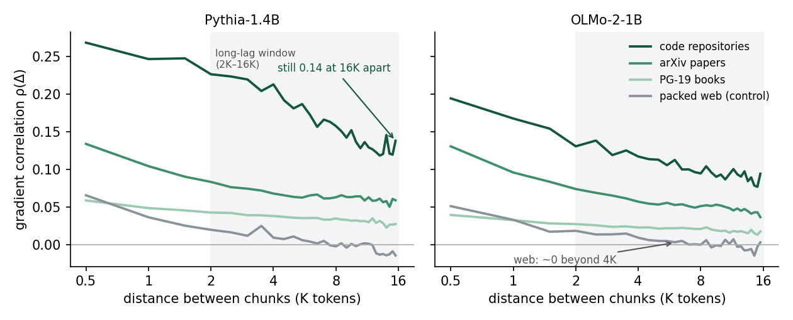

Long documents make your batch smaller than it looks
Q: Why isn’t counting tokens enough?
Take a repo and cut it into 32 chunks. The same classes, imports and names keep showing up. You split the text, but those connections are still there.
I measured how much gradient noise the chunks share. When noise is shared, averaging cancels less of it.
Q: What did you run?
Three models: Pythia-410M, Pythia-1.4B and OLMo-2-0425-1B. The results below are from the final checkpoints of the last two.
The data came from The Stack repositories, arXiv papers, PG-19 books and packed FineWeb. “Packed web” means joining web documents to fill a sequence.
I used 16 documents per corpus, the same across models. Each 16K span was split into 32 chunks of 512 tokens.
Each chunk ran alone, without attention to earlier chunks. This isn’t an actual 16K training step. The effect with full attention could be larger or smaller.
Q: How far apart were chunks still correlated?
For code, chunks 15,872 tokens apart still had correlation 0.14 on Pythia-1.4B and 0.09 on OLMo.
Web was near zero by about 4K. arXiv and books were between code and web.
A correlation of 0.09 may look small. But each 32-chunk block has 496 pairs. Small correlations across many pairs can add up.

Q: What is R?
R compares the noise variance of the average gradient with what it would be for independent chunks from the same corpus.
R = 1 means no increase. R = 4 means the noise variance of averaging one-quarter as many independent chunks.
Web has correlation too. So I divide each corpus’s R by web’s R. That gives Rrel.
Q: What does that give for a 1M-token batch?
The calculation is 1M / Rrel. These are the web-relative effective sample counts:
| Data | Pythia-1.4B | OLMo-2 |
|---|---|---|
| Code | 204K | 285K |
| arXiv | 424K | 448K |
| Books | 639K | 769K |
So code gives about 20–28% of packed web’s effective count at matched tokens.
204K and 285K are two model estimates, not the ends of a confidence interval. For code, the 95% intervals are 129K–382K on Pythia and 191K–421K on OLMo.
The bootstrap intervals describe this small document sample, not the full corpora.
Q: Does that mean most code tokens are wasted?
No. I didn’t measure how many tokens were useful.
This adjusts sample counts for correlation. It doesn’t compare absolute gradient noise. Per-chunk noise variance and mean gradients differ across corpora.
There’s no learning-rate rule here either. The gradient-noise scale Bsimple ignores curvature. More noise doesn’t by itself mean worse training.
Q: Did the preregistered test pass?
No. The web control needed R below 1.2. It got 1.26–1.41.
The later rule moved the 1.5 threshold from raw R to Rrel. None of the stopping criteria fire under that rule.
But the change was made after seeing results. I cannot call this a preregistered pass. The verdict stays inconclusive.
Try it yourself
Pick a corpus, a model and the tokens per step you train with. Then flip through the curves behind the numbers above.
How to cite
@techreport{yang2026longdocbatch,
author = {Yang, Hanyu},
title = {Long documents make your batch smaller than it looks: measuring within-document gradient correlation},
year = {2026},
institution = {Zenodo},
doi = {10.5281/zenodo.23268861},
url = {https://doi.org/10.5281/zenodo.23268861}
}